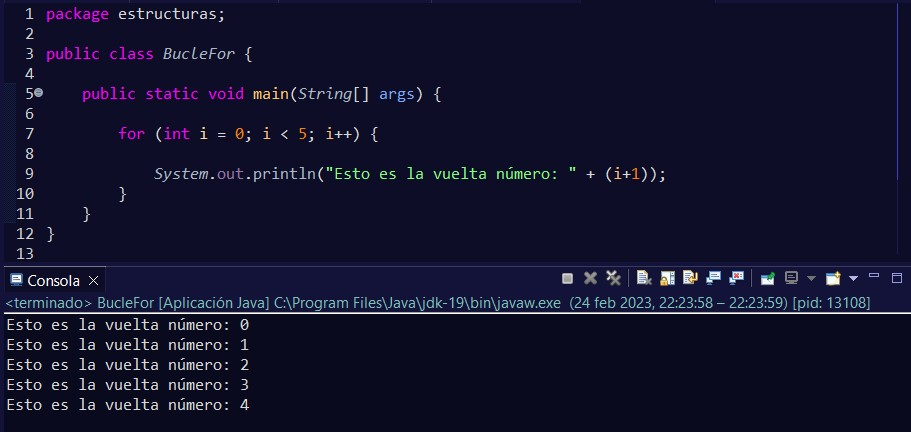
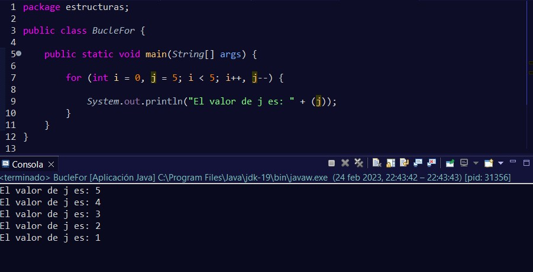
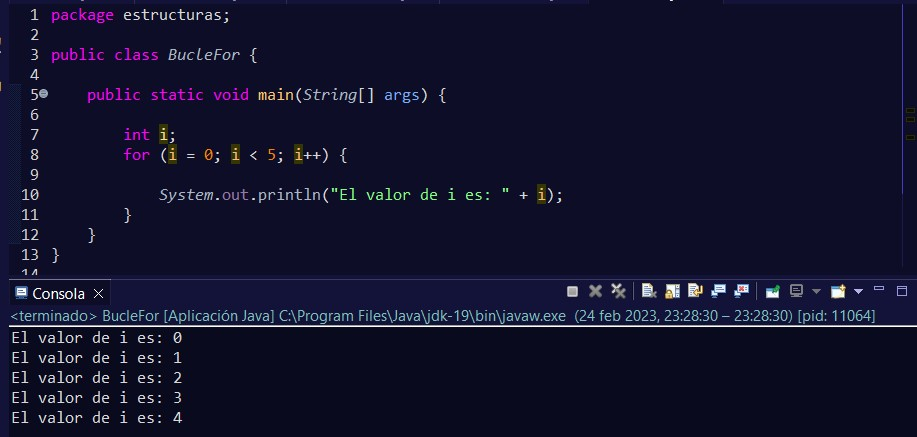
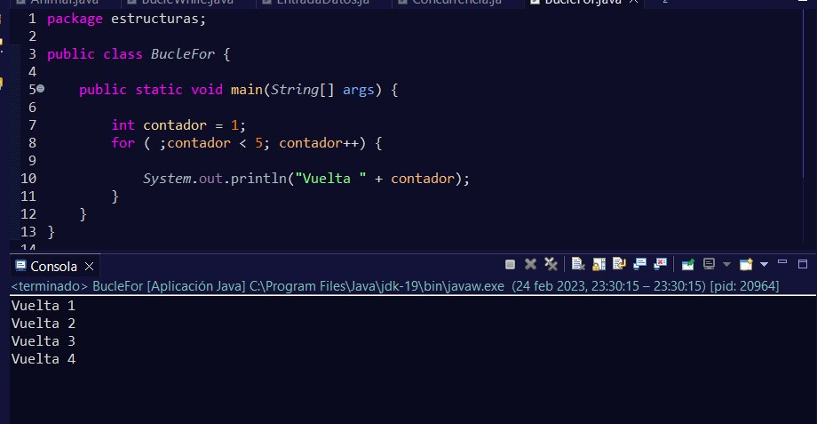

El bucle for lo utilizaremos cuando sepamos concretamente cuántas vueltas se tienen que dar.
Normalmente en un bucle for, solo incluimos entre los paréntesis una variable, pero podríamos inicializar más en caso de necesitarlas y decir cómo va a evaluarse ésta.
También podríamos haber declarado fuera la variable que tendremos en la cabecera de nuestro bucle y después inicializarla dentro.
Y no solo eso, hasta podríamos prescindir de la inicialización de la variable en la cabecera:
